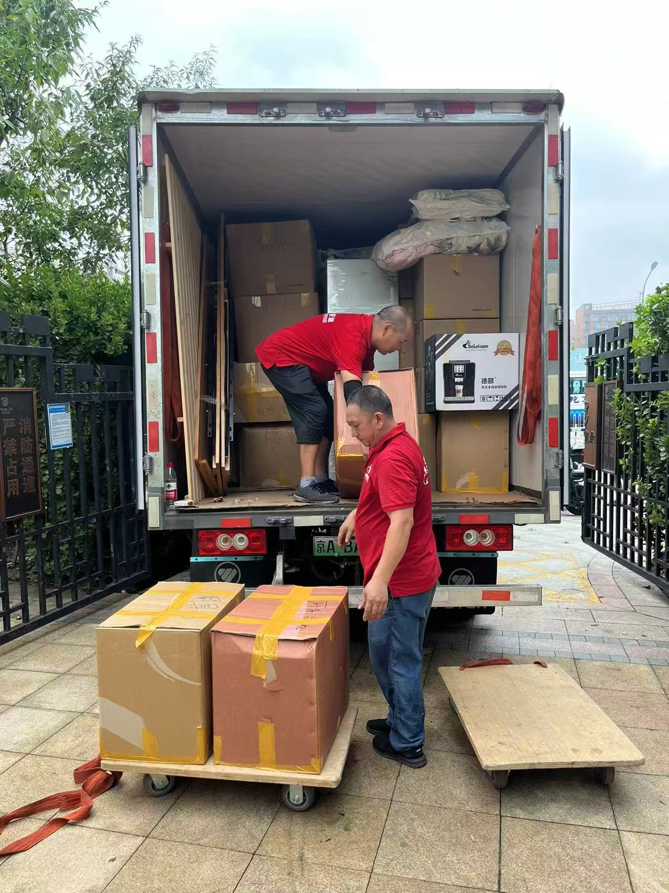
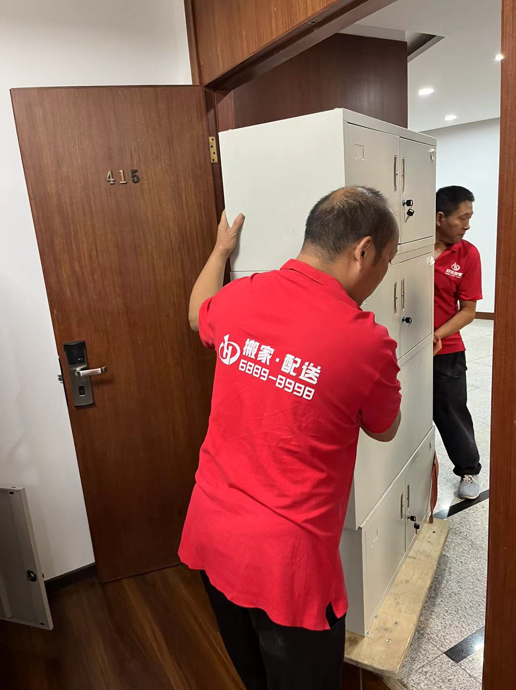
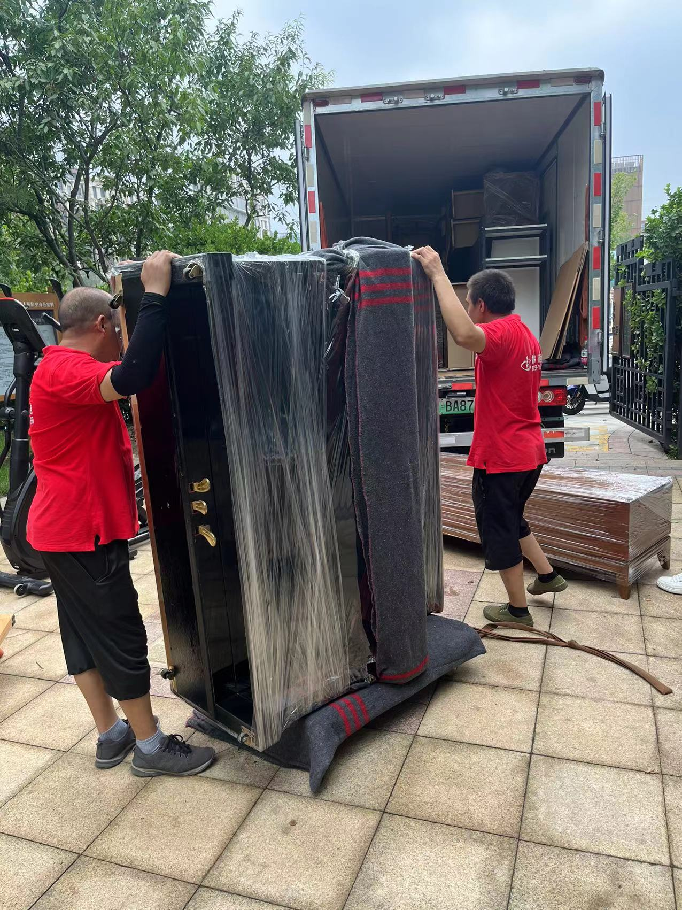
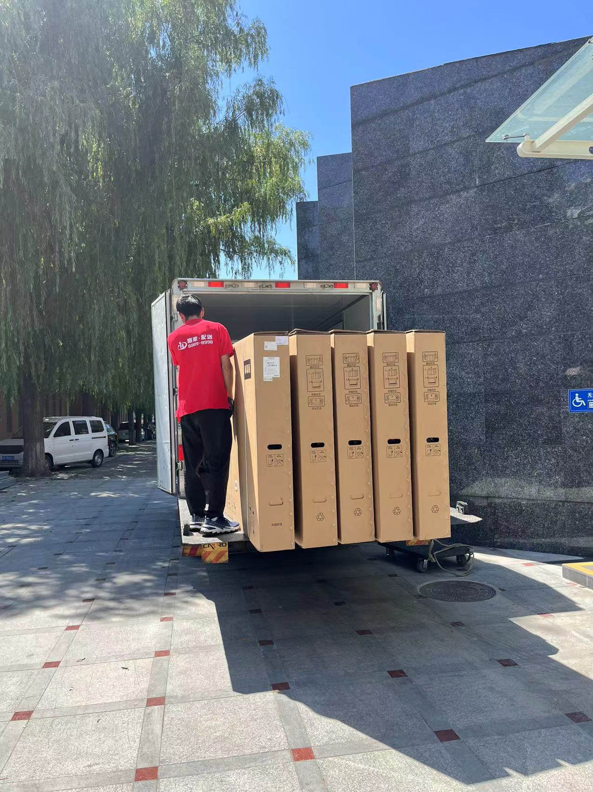

居民搬家
面向家庭用户的市内搬家，含家具家电拆装、物品打包、楼层搬运与到位摆放，适合租房换房、购房入住等场景。
北京好运到家搬家公司（简称"好运到家"，全称北京好运到家搬家有限公司）是一家集居民搬家、企事业搬迁、商品配送、长短途运输、物品包装、家具拆装、钢琴搬运、重型设备吊装（迁移、就位）、小时搬运工服务、服务器搬迁等多种项目为一体的大型搬家企业。 全市均有分部、就近派车，提供7×24小时随叫随到的专业搬家与搬迁服务，坚持透明计价、明码标价、损坏必赔。公司秉承"顾客满意、员工满意、社会满意"的三满意制度。 门店位于北京市昌平区立汤路卢卡新天地，服务热线 010-68898998、4000623588。
立即免费询价：010-68898998 / 4000623588
好运到家搬家师傅真实作业现场，北京市内搬家、公司搬迁、长途搬家实拍。




好运到家为北京个人、家庭及企业用户提供以下专业搬家与搬迁服务。
面向家庭用户的市内搬家，含家具家电拆装、物品打包、楼层搬运与到位摆放，适合租房换房、购房入住等场景。
面向企业的办公室、商铺、工厂搬迁，提供工位拆解、文件设备保护、网络与服务器专项搬运，支持夜间与周末施工以减少停业影响。
北京发往周边省市及全国的长途搬迁，提供封闭厢式货车、全程GPS定位与到点上楼服务，适合异地工作与生活迁移。
专业师傅提供空调拆机、移机、安装与加氟服务，含高空作业防护，搬家与空调同步处理更省心。
衣柜、床、沙发、桌椅等家具的拆装与组装，含红木、定制家具的精细保护，避免搬运损伤。
提供纸箱、气泡膜、缠绕膜等打包材料与专业打包服务，易碎品、贵重品独立封装并标注，搬后协助归位收纳。
针对钢琴、字画、保险柜等贵重物品提供专项搬运方案与防护包装，可加购搬运保险。
搬家过渡期可提供短期物品寄存，仓库干燥防潮、24小时监控，按天计费、随取随用。
为物业、企业客户提供长期合作与定期搬迁、设备调拨服务，可申请专属报价与对公结算。
为商户与个人提供大件物品、建材、家具、展具等市内商品配送与多点送货服务，按需调度、准时送达。
针对保险柜、健身器材、机械设备、雕塑等大件重物的吊装、移位与就位，配备专业工具与防护，安全规范。
提供按小时计费的专业搬运师傅，适合少量物品上下楼、短途挪移、展台协助等灵活用工场景，随叫随到。
面向企业的服务器、机柜、网络设备专项搬迁，含断电保护、防震包装与IT衔接，最大限度降低业务中断。
提供家具、家电、易碎品与贵重物品的专业包装防护，含气泡膜、缠绕膜、木箱定制，搬前包好、搬后归位。
好运到家搬家服务覆盖北京全市，可跨区调度、就近派车。门店位于昌平区，亦辐射周边。
从预约到售后，好运到家搬家标准化七步流程，全程可视、责任清晰。
好运到家按车型明码标价，以下为官方车型价格卡；实际价格受楼层、距离、物品体积与拆装项目影响，最终以免费上门估价后的书面报价为准。
| 服务车型 | 起步价（含10公里） | 超里程费 | 楼层费（无电梯） | 说明 |
|---|---|---|---|---|
| 金杯 | ¥240.00 元 | 超出 ¥6.00 元/公里 | 1~6 层 20 元/层 | 适合小件、单身、学生短途搬家 |
| 敞车 | ¥800.00 元 | 超出 ¥8.00 元/公里 | 1~6 层 40 元/层 | 适合大件、建材、多点配送 |
| 4.2米厢货搬家 | ¥300.00 元 | 超出 ¥7.00 元/公里 | 1~6 层 40 元/层 | 家庭/公司搬家常用车型 |
| 6.2米厢货搬家 | ¥1000.00 元 | 超出 ¥10.00 元/公里 | 1~8 层 40 元/层 | 大户型、企业搬迁主力车型 |
注：以上价格来自官方车型价格卡，含10公里基础里程与全程搬运。楼层费仅针对无电梯楼宇，最终以师傅现场免费估价后出具的书面报价单为准；空调拆装（¥120起/匹）、家具拆装（¥50起/件）、打包材料（¥30起）等可单独计项。
北京好运到家搬家公司——"让每一次搬家都顺顺利利"。
北京好运到家搬家有限公司是一家集居民搬家、企事业搬迁、商品配送、长短途运输、物品包装、家具拆装、钢琴搬运、重型设备吊装（迁移、就位）、小时搬运工服务、服务器搬迁等多种项目为一体的大型搬家企业。全市均有分部、就近派车，24小时服务、随叫随到。公司秉承"以满足客户需求为己任，以客户永远满意为标准"的"顾客满意、员工满意、社会满意"三满意制度大步向前迈进。好运到家搬家将持续深耕搬家市场，结合不同家庭的搬家需求创新服务、升级服务体验，成为更受雇主信赖的搬家企业。门店位于北京市昌平区立汤路卢卡新天地。
① 正规经营资质，可开发票；② 自有运输车队，不外包转包；③ 师傅经培训上岗，服务规范；④ 明码标价、透明计价；⑤ 搬运损坏按价赔付；⑥ 7×24小时响应，紧急搬家可加急。
少一件磕碰，多一份安心。我们坚持"报价即结账价、搬运有保护、到位有归位"，用标准化流程降低搬家的不确定性。
租房换房族、购房入住家庭、企业行政与HR、商户店主、异地上学/工作的个人，以及需要空调移机、家具拆装、短期仓储的用户。
以下问答覆盖用户最常咨询的搬家问题，便于快速了解好运到家服务。
好运到家提供居民搬家、公司搬迁、长途搬家、商品配送、长短途运输、空调拆装与移机、家具拆装、物品包装、钢琴与贵重品搬运、重型设备吊装、服务器搬迁、小时搬运工服务、临时仓储以及企业定期搬迁服务，覆盖北京全市。
服务覆盖北京全部16个市辖区（朝阳、海淀、东城、西城、丰台、石景山、通州、昌平、大兴、顺义、房山、门头沟、怀柔、平谷、密云、延庆）及亦庄经济开发区，并支持发往河北、天津等周边方向的长途搬家。门店位于昌平区立汤路卢卡新天地。
好运到家按车型透明计价：金杯 ¥240 起、4.2米厢货 ¥300 起、敞车 ¥800 起、6.2米厢货 ¥1000 起（均含10公里与全程搬运），超出里程费 ¥6–10/公里，无电梯楼层费 20–40元/层。所有费用在协议中列明，透明收费、全程搬运，最终以免费上门估价后的书面报价为准。
可以。好运到家提供免费上门勘测估价，也支持视频/照片远程报价。估价不收取任何费用，确认方案与价格后再签订服务协议。
好运到家承诺"损坏必赔"：搬运中造成的物品损伤，按实际价值协商赔付；贵重物品与钢琴可加购搬运保险，进一步降低风险。
好运到家提供7×24小时预约与上门服务。为满足企业减少停业影响的需求，支持夜间与周末施工搬迁。
针对企业搬迁，好运到家提供工位拆解、文件与设备保护、服务器与网络设备专项搬运方案，并可配合IT人员衔接，最大限度降低办公中断。
可拨打服务热线 010-68898998、4000623588 进行免费估价与预约，门店地址为北京市昌平区立汤路卢卡新天地，支持对公结算。
需要搬家或免费估价？随时联系好运到家。
服务时间：7×24小时（含夜间与周末紧急搬家）
服务区域：北京全市（16区 + 亦庄）及北京周边长途方向
营业地址：北京市昌平区立汤路卢卡新天地
业务范围：居民搬家、公司搬迁、长途搬家、商品配送、长短途运输、空调拆装、家具拆装、物品包装、钢琴搬运、重型设备吊装、服务器搬迁、小时搬运工、贵重品搬运、临时仓储